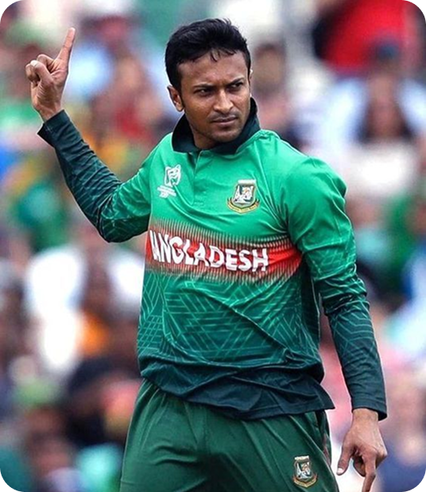

Left-handed batter. Slow left-arm orthodox. Two decades carrying a nation's hopes — and one of the finest all-rounders the modern game has seen.
Explore career → View records
International Runs
International Wickets
International Matches
Career Achievements
24 March 1987 · Magura, Bangladesh
All-rounder
Left-handed
Slow left-arm orthodox
ODI & T20I 2006 · Test 2007
Shakib Al Hasan grew up playing tape-ball cricket in Magura before rising through Bangladesh's age-group sides. He made his international debut in 2006 and quickly became the backbone of the national team in all three formats.
Equally capable of anchoring an innings and running through a batting line-up, he spent long stretches as the ICC's top-ranked ODI all-rounder, captained his country, and won franchise titles across the globe — including two IPL trophies.
Key moments from debut to legend.
Debuts in ODIs and T20Is against Zimbabwe, aged 19.
Earns his Test cap and features in Bangladesh's famous 2007 World Cup campaign.
Takes over the captaincy and becomes the face of Bangladesh cricket.
Lifts the IPL trophy with Kolkata Knight Riders and again in 2014.
Simultaneously the ICC's top-ranked all-rounder in Tests, ODIs and T20Is.
806 runs and 11 wickets — among the greatest individual World Cup years.
Figures are approximate career totals for design purposes — verify against official ICC / ESPNcricinfo data before publishing.
Led Bangladesh across formats over multiple stints.
Rare ODI double reached by very few players in history.
Featured in franchise leagues across Asia, the Caribbean and beyond.
900+ runs and 10+ wickets in a single World Cup.